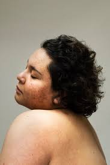
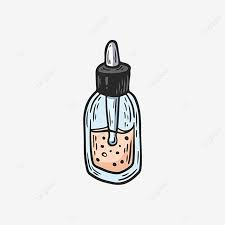
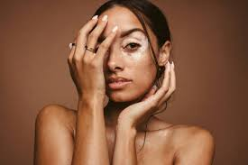
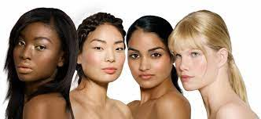
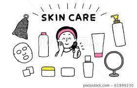
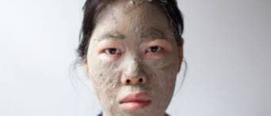
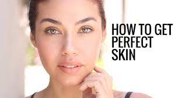
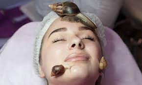

A Journey Into Skin Care
A persistent theme that I’ve noticed about my life has been the lack of accurate
information and marketing involved in skin care. Furthermore, myself and others
have all had experiences of burning skin by following information such as
putting limes or oranges or other citrus fruits on our faces for a more
natural look. I also have felt a lot of pressure to spend a lot of money. I think
that in the age of information there’s a lot of access to information but I also
feel like it can be hard to discern truth from fiction. I also think that there
isn’t always a full representation of diversity when it comes to different skin
types on the internet. Additionally, I think it’s important to have realistic
expectations of what skin can be rather than having this perfect image that can
only be attained through a specific set of products. I think it can lead to a
lot of issues with self-esteem. I think that the line between self improvement
and trying to live up to an expectation that isn’t reasonable can be a little
bit hard to differentiate, especially growing up.
In terms of skin care as a habit, I feel a sense of comfort in the routine that
it gives me on a day-to-day basis. I feel like I’ve accomplished something for
myself when I do my skin care routine. Sometimes I can be stressed or tired or
just unmotivated and being able to fall back on the sense of routine has been
really powerful for me because it is one small thing I can do for myself that
will benefit me long term. Something that was freeing for me was realizing that
I don’t have to have a super fancy routine, I can have a basic routine that I
can do in a cost effective and easy manner. I wish I would’ve known early on that
skin care doesn’t have to be a painful chore or a source of pressure, it can be
something that’s calm and soothing. I found that simplicity freeing for myself and
this website is sort of a look at things that have worked for me and resources that
I have found helpful.